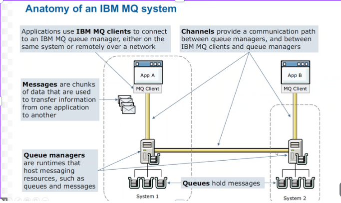
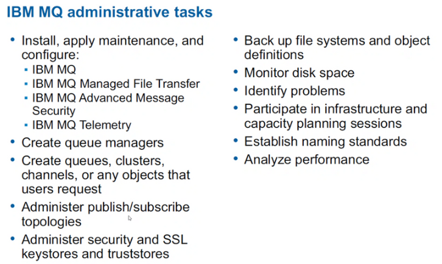
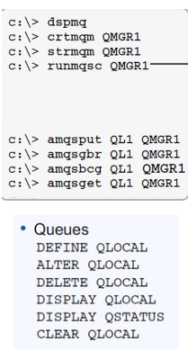
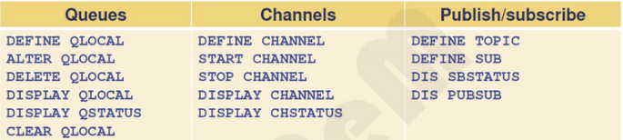

Si tenemos dos APPs que se quieren comunicar, es decir, la A le quiere enviar un mensaje a la B y falla o se pierde debido a la red.
La solución es establecer un middleware entre medias, tanto por fallo como por seguridad, ya que al ser un intermediario verificado,
le puede autenticar al receptor que el mensaje del emisor es veraz. Cuenta con colas para guardar mensajes a enviar más tarde.
Esto hizo la creación de IBM MQ, un sistema de comunicaciones de IBM para intercambiar información entre APPs, sistemas, servicios y ficheros.
¿Cómo funciona el MQ?:

El cliente A usa su APP desde un PC para enviar un mensaje a B. Para ello, el gestor de mensajes guarda el mensaje en un sistema de colas
para enviarlo en orden al PC de B, quien tiene su propio gestor de mensajes con cola de mensajes con la misma función. Con el objetivo final
de que el mensaje llegue a B.
Los mensajes persistentes son los que se guardan. Al contrario de los no persistentes.
Hay cuatro tipos de colas: local, remoto, alias y modelo.
Sobre una partición no se puede montar gestor de colas, sólo sobre un secuencial.
Puedes levantar el servidor de comunicaciones en otra máquina ajena a la tuya de forma virtual.
Crear un socket es definir los puertos de comunicación.
Envío de mensajes entre Queue Managers es unidireccional: 1 emisor y 1 receptor. Es asíncrono.
El canal entre clientes MQ es bidireccional: 2 emisores y 2 receptores. Es síncrono. Se maneja por medio de la MQI = Interfaz de cola de mensajes.


MQTT es un protocolo de comunicaciones simplificado que se utiliza en los móviles para casos en los que no haya cobertura y/o energía.
La cola (Queuing) es el mecanismo que permite enviar mensajes de manera síncrona.
La red de IBM internamente usa el SNA, fuera del mainframe se usa TCP/UDP.
Puedo dejar los mensajes en memoria (no persistente, porque si el sistema cae, lo pierdo) o en un log (persistente, aunque el sistema caiga,
se mantiene guardado).
Las APPs o Middlewares son las encargadas del envío y recibo de mensajes.
Un canal sirve para comunicar servidores entre sí.
Componentes de IBM MQ básicos: colas, mensajes, canales, Queue Manager (Servidor) y la MQI (Interfaz de cola de mensajes).
Primero hay que iniciar la cola con unos requerimientos y luego establecer la transmisión mediante XMITQ.
La prioridad de los mensajes se ponen en la parte del “descriptor” de la cabecera de la trama.
Cuando creo una cola, no es necesario poner todos los parámetros.
Para abrir una cola: MQI MQOPEN. Y para poner un mensaje en la cola: MQI MQPUT.
Un middleware sirve para independizar las comunicaciones de la infraestructura de red física.
IBM MQ es un programa o subsistema del sistema operativo z/OS que ejecuta en el Mainframe, en un espacio de direcciones virtuales.
CICS es un middleware o subsistema.
Dados dos servidores A y B, si yo me conecto al A, su cola para mí es local y las colas del B son en remoto. El canal es unidireccional.
Los bufferes están en el almacenamiento del procesador. Un conjunto de páginas/page set es un fichero VSAM.
Las colas (OE1, OEn....) se definen en clases de almacenamiento (ARC1, ARCn....) y éstas a su vez se definen en conjuntos de páginas o PSIDs
(PSID1, PSIDn....). El máximo de bufferes son de 100 => de 0 a 99.
Hay dos tipos de topología: la de punto a punto, que es una topología tipo estrella y, la de publicar/suscribir, que es una topología tipo
nodo central con colas.
Diferencias entre Repositorios completos y parciales. Los primeros tienen información de los todos los Queue Managers,
aunque no estén conectados a ellos. Los segundos tienen sólo información de aquellos Queue Managers a quienes están conectados.
Para usar MQ hay que hacerlo mediante un CICS.
En el SDSF => s espara ver el contenido, sj es para ejecutar en fichero, ? es para ver que hay en el JOB creado.
¿Dónde van los mensajes que no se envían? A la Dead-letter Queue.

----------------------------------------------------------------------------------------------------------------------------
RESUMEN:
- Anatomia de un sistema MQ y sus componentes.
- El interface s api.
- Tipo de colas.
- Almacenamiento de las colas => en las locales.
----------------------------------------------------------------------------------------------------------------------------